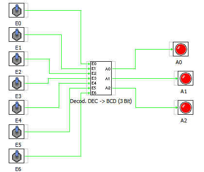

CODIFICADOR Decimal a BCD de 3 bits es un bloque que tal como indica su nombre permite obtener en sus salidas el codigo BCD correspondiente a sus entradas
Las entradas son E0... E6 Las salidas son A0, A1, A2
